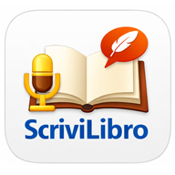

ScriviLibroSalva una copia del libro corrente per riprendere il lavoro in futuro.
Tocca ☰ in alto a sinistra per aprire il pannello dei capitoli. Crea nuovi capitoli con il tasto blu in fondo, rinominali con ✏️ o eliminali con ✕. Il capitolo attivo è evidenziato in blu. Cambiare o eliminare un capitolo interrompe automaticamente qualsiasi registrazione in corso.
Il Titolo capitolo in cima alla pagina principale può essere modificato direttamente: il nome si aggiorna in tempo reale anche nel pannello dei capitoli e viene salvato automaticamente.
Il campo Titolo capitolo in cima è modificabile direttamente. Scrivi il testo nell'area grande: viene salvato automaticamente ad ogni modifica.
Tocca Avvia registrazione: il microfono trascrive la tua voce in italiano in tempo reale, aggiungendo ogni frase al testo già presente. Il tasto diventa rosso e pulsa mentre è attivo; il riquadro giallo mostra le parole ancora in fase di riconoscimento.
Tocca Stop registrazione per terminare. Il testo viene salvato.
⚠️ Richiede permesso microfono. Su Android usa Chrome; su iPhone usa Safari. Richiede connessione internet.
Copia testo — copia l'intero testo del capitolo corrente negli appunti.
Modifica testo — pannello a schermo intero con il testo diviso in frasi. Tocca le frasi da eliminare (diventano rosse con testo barrato), poi premi Elimina selezionate. Usa ↩️ Annulla per ripristinare (fino a 20 passi).
⚠️ Se usi una VPN, disattivala prima di usare gli strumenti AI.
Le VPN bloccano spesso le chiamate all'API Groq.
Passo 1 — Crea un account Groq (gratuito)
Vai su console.groq.com e registrati (puoi usare il tuo account Google o GitHub). Groq è gratuito: 14.400 richieste al giorno, risposta in ~1-2 secondi.
Passo 2 — Crea la chiave API
gsk_…Passo 3 — Inserisci la chiave in ScriviLibro
gsk_… nel campo appositoUtilizzo
Tocca 🤖 → scegli una categoria → scegli l'opzione → attendi lo spinner di elaborazione (compare nella stessa schermata) → l'AI mostra un'anteprima in basso nella pagina: tocca ✓ Applica per sostituire il testo nel capitolo, o ✕ Annulla per scartare senza modificare nulla.
🔒 La chiave API è salvata solo sul tuo dispositivo e non viene mai trasmessa a server diversi da api.groq.com.
Gestisci più libri indipendenti. Puoi aprire il pannello I miei libri in due modi:
Nel pannello:
ℹ️ I libri restano solo su questo dispositivo (localStorage).
Il testo è salvato automaticamente a ogni modifica. Il tasto Salva nella pagina principale forza un salvataggio esplicito. I dati restano solo su questo dispositivo (localStorage) e non escono mai dal telefono.
TXT — tutti i capitoli in un file di testo semplice.
DOCX — documento Word con titoli in grassetto, apribile in
Microsoft Word, LibreOffice e Google Docs.
Verde = online. Grigio = offline. Scrittura e salvataggio funzionano anche offline; dettatura e AI richiedono connessione.
Inserisci la tua chiave API Groq (gratuita).
Registrati su console.groq.com → API Keys → Create.
Elaborazione in corso…
Tocca le frasi da eliminare (si colorano di rosso), poi premi il tasto.